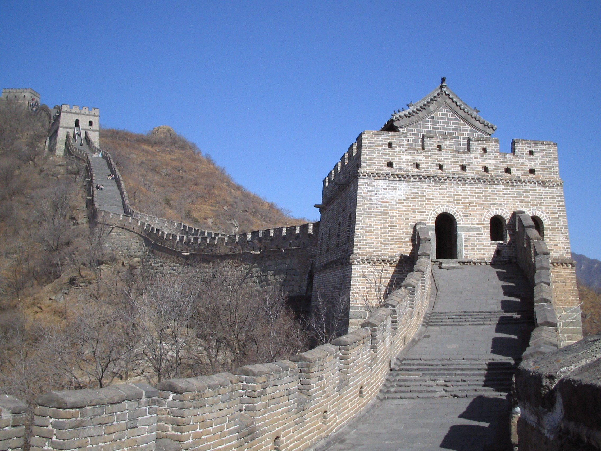

Acerca de la Gran Muralla China
La Gran Muralla China es un muro enorme que cruza montañas, desiertos y valles. Fue construida hace muchos años para proteger a las personas que vivían en China de los invasores. ¡Es tan larga que parece no tener fin! Caminando por la muralla, puedes imaginarte cómo era la vida hace miles de años. También es un símbolo de lo que se puede lograr cuando las personas trabajan juntas.
Actividades
- Construcción en casa: Usen bloques o cubos para construir su propia "muralla" y vean quién puede hacerla más larga.
- Dibujo de paisajes: Pide a los niños que dibujen las montañas y paisajes que rodean la Gran Muralla. ¿Qué animales o plantas incluirían?